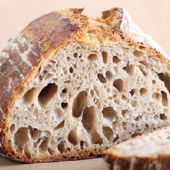
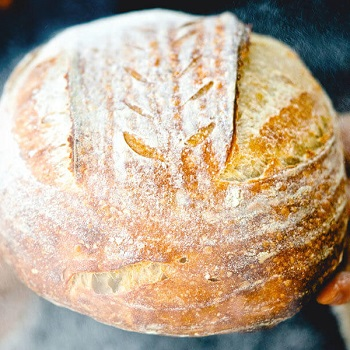
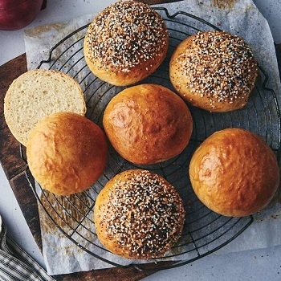

Sourdough Bread

Sourdough bread is delicious and nutritious, check out how you can get started making your own mouth watering sourdough at home!
Whole Wheat Bread
Wheat bread is delicious and nutritious, check out how you can get started making your own mouth watering wheat bread at home!
Rye Bread
Rye bread is delicious and nutritious, check out how you can get started making your own mouth watering rye bread at home!
Oat Bread

Oat bread is delicious and nutritious, check out how you can get started making your own mouth watering oat bread at home!
Sourdough Buns
Buns are delicious and nutritious, check out how you can get started making your own mouth watering oat bread at home!
Sourdough Pancakes

Pancakes are delicious and nutritious, check out how you can get started making your own mouth watering oat bread at home!